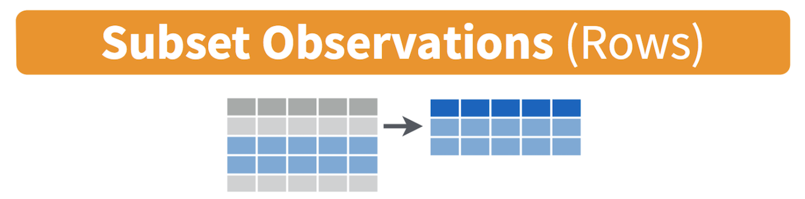

Tutorial 7: Data Wrangling
GEOG-364 - Spatial Analysis
Tutorial 7: Table Wrangling
This tutorial is all about manipulating spreadsheets/data.frames/tables.
Tutorial 7A: Selecting a specific column
Here I am using the frost data from lab 2 as an example.
Sometimes we want to deal with only one specific column in our spreadsheet/dataframe, for example applying the mean/standard deviation/inter-quartile range command to say just the distance_to_the_coast.
To do this, we use the $ symbol. For example, here I’m simply selecting the data in the elevation column only and saving it to a new variable called elevationdata.
elevationdata <- frost$ElevationTry it yourself. You should have seen that as you typed the $, it gave you all the available column names to choose from.
This means we can now easily summarise specific columns. For example:
summary(frost)will create a summary of the whole spreadsheet,summary(frost$Longitude)will only summarise the Longitude column.
mean(frost$Dist_to_Coast)will take the mean of the Dist_to_Coast column in the frost dataframe.
Tutorial 7B: table command: counts per group
Sometimes we want to count the occurrences of some category in our dataset. For example, if you look at the frost dataset from Lab 2, it might be interesting to know how many stations were in each US State.
To do this, we use the table command:
 So for example, to find the number of stations at each elevation, I would type:
So for example, to find the number of stations at each elevation, I would type:
table(frost$Elevation)or to see the number at each elevation in each State, I would type
table(frost$Elevation, frost$State)For more, this tutorial is excellent: https://www.cyclismo.org/tutorial/R/tables.html.
Tutorial 7C: group_by command: statistics per group
What if we want to do more than just count the number of rows?
Well, we can use the group_by() and summarise() commands and save our answers to a new variable.
Here we are making use of the pipe symbol, %>%, which takes the answer from group_by and sends it directly to the summarise command.
frost.summary.type <- group_by(frost, by=Type_Fake) %>%
summarise(mean(Latitude),
max(Latitude),
min(Dist_to_Coast))
frost.summary.type## # A tibble: 3 × 4
## by `mean(Latitude)` `max(Latitude)` `min(Dist_to_Coast…
## <chr> <dbl> <dbl> <dbl>
## 1 Agricultural_Research_St… 33.7 36.3 4.95
## 2 Airport 34.4 37.3 45.4
## 3 City 33.7 36.5 1.15Here, my code is:
- Splitting up the frost data by the Type_Fake column
(e.g. one group for City, one for Airport and one for Agricultural Research) - For the data rows in each group, calculating the mean latitude, the maximum latitude and the minimum distance to the coast
- Saving the result to a new variable called frost.summary.type.
- Printing the results on the screen e.g. the furthest North/maximum latitude of rows tagged Agricultural_Research_Station is 36.32 degrees.
Tutorial 7D: filtering rows and columns
Sometimes, we do not want to analyse at the entire data.frame. Instead, we would like to only look at one (or more) columns or rows.
There are several ways we can select data.
To choose a specific column, we can use the
$symbol to select its name (as described in Tutorial 7A)If you know which number rows or columns you want, you can use square brackets to numerically select data.
Essentially our data follows the format: TABLENAME[ROWS,COLUMNS]
# This will select the 5th row and 7th column
frost[5,7]## # A tibble: 1 × 1
## Elevation
## <dbl>
## 1 195# This will select the 2nd row and ALL the columns
frost[2,]## # A tibble: 1 × 8
## Station State Type_Fake Avg_DOY_SpringFrost Latitude Longitude Elevation
## <chr> <chr> <chr> <dbl> <dbl> <dbl> <dbl>
## 1 Union AL City 82.3 32.0 -85.8 440
## # … with 1 more variable: Dist_to_Coast <dbl># This will select the 3rd column and ALL the rows
frost[,3]## # A tibble: 76 × 1
## Type_Fake
## <chr>
## 1 City
## 2 City
## 3 Airport
## 4 City
## 5 City
## 6 City
## 7 City
## 8 City
## 9 Agricultural_Research_Station
## 10 Agricultural_Research_Station
## # … with 66 more rows# similar to using its name
frost$Type_Fake## [1] "City" "City"
## [3] "Airport" "City"
## [5] "City" "City"
## [7] "City" "City"
## [9] "Agricultural_Research_Station" "Agricultural_Research_Station"
## [11] "Agricultural_Research_Station" "Airport"
## [13] "Airport" "City"
## [15] "City" "Airport"
## [17] "City" "Airport"
## [19] "City" "Airport"
## [21] "City" "City"
## [23] "City" "Airport"
## [25] "Agricultural_Research_Station" "City"
## [27] "City" "City"
## [29] "Airport" "Agricultural_Research_Station"
## [31] "Airport" "City"
## [33] "City" "City"
## [35] "Airport" "Agricultural_Research_Station"
## [37] "City" "City"
## [39] "City" "Agricultural_Research_Station"
## [41] "Agricultural_Research_Station" "City"
## [43] "City" "Airport"
## [45] "Airport" "Airport"
## [47] "Agricultural_Research_Station" "City"
## [49] "City" "City"
## [51] "City" "Agricultural_Research_Station"
## [53] "Agricultural_Research_Station" "Agricultural_Research_Station"
## [55] "Airport" "City"
## [57] "Airport" "City"
## [59] "Airport" "City"
## [61] "Agricultural_Research_Station" "Airport"
## [63] "Agricultural_Research_Station" "City"
## [65] "City" "City"
## [67] "City" "Airport"
## [69] "Airport" "Agricultural_Research_Station"
## [71] "Airport" "City"
## [73] "Airport" "Airport"
## [75] "City" "Agricultural_Research_Station"# We can combine our commands, this will print the 13th row of the Longitude column
# (no comma as we're only looking at one column)
frost$Longitude[13]## [1] -82.58# The : symbol lets you choose a sequence of numbers e.g. 1:5 is 1 2 3 4 5
# So this prints out rows 11 to 15 and all the columns
frost[11:15,]## # A tibble: 5 × 8
## Station State Type_Fake Avg_DOY_SpringFr… Latitude Longitude Elevation
## <chr> <chr> <chr> <dbl> <dbl> <dbl> <dbl>
## 1 Winthrop SC Agricultural_Re… 87.2 34.9 -81.0 690
## 2 Little SC Airport 87.7 34.2 -81.4 711
## 3 Calhoun SC Airport 91.5 34.1 -82.6 530
## 4 Clemson SC City 93.6 34.7 -82.8 824
## 5 De FL City 71.3 30.7 -86.1 245
## # … with 1 more variable: Dist_to_Coast <dbl># The "c" command allows you to enter whatever numbers you like.
# So this will print out rows 4,3,7 and the "Elevation" and "Dist_to_Coast" columns
frost[c(4,3,7), c("Elevation","Dist_to_Coast")]## # A tibble: 3 × 2
## Elevation Dist_to_Coast
## <dbl> <dbl>
## 1 13 1.15
## 2 800 252.
## 3 500 132.The dplyr filter command (tidyverse)
Filtering means selecting rows/observations based on their values. To filter in R, use the command filter() from the dplyr package. I tend to write it as dplyr:filter() to force it to be correct.
Visually, filtering rows looks like this.

Here we can apply the filter command to choose specific rows that meet certain criteria
filter(frost, State == "FL")The double equal operator == means equal to. The command is telling R to keep the rows in frost where the State column equals “FL”.
If you want a few categories, choose the %in% operator, using the c() command to stick together the categories you want. For example, here are states in Florida and Virginia.
filter(frost, State %in% c("FL","VA"))We can also explicitly exclude cases and keep everything else by using the not equal operator !=. The following code excludes airport stations.
filter(frost, Type_Fake != "Airport")What about filtering if a row has a value greater than a specified value? For example, Stations with an elevation greater than 500 feet?
filter(frost, Elevation > 500)Or less-than-or-equal-to 200 feet.
filter(frost, Elevation < 200)
# or save the result to a new variable
lowland_stations <- filter(frost, Elevation < 200)In addition to comparison operators, filtering may also utilize logical operators that make multiple selections. There are three basic logical operators: & (and), | (or), and ! (not). We can keep Stations with an Elevation greater than 300 and State in Alabama &.
filter(frost, Elevation > 300 & State == "AL")Use | to keep Stations with a Type_Fake of “Airport” or a last spring frost date after april (~ day 90 of the year).
filter(frost, Type_Fake == "Airport" | Avg_DOY_SpringFrost > 90 )The dplyr arrange command (tidyverse)
We use the arrange() function to sort a data frame by one or more variables. You might want to do this to get a sense of which cases have the highest or lowest values in your data set or sort counties by their name. For example, let’s sort in ascending order by elevation.
arrange(frost, Latitude)## # A tibble: 76 × 8
## Station State Type_Fake Avg_DOY_SpringF… Latitude Longitude Elevation
## <chr> <chr> <chr> <dbl> <dbl> <dbl> <dbl>
## 1 Inverness FL City 50.6 28.8 -82.3 40
## 2 Ocala FL City 52.7 29.2 -82.1 75
## 3 Lake FL City 60.6 30.2 -82.6 195
## 4 Tallahassee FL Agricultural… 75.8 30.4 -84.4 55
## 5 Fernandina FL City 46.9 30.7 -81.5 13
## 6 De FL City 71.3 30.7 -86.1 245
## 7 Quitman GA City 65.5 30.8 -83.6 185
## 8 Brunswick GA Agricultural… 48.4 31.2 -81.5 13
## 9 Waycross GA Agricultural… 75.9 31.2 -82.3 145
## 10 Tifton GA City 87.3 31.4 -83.5 380
## # … with 66 more rows, and 1 more variable: Dist_to_Coast <dbl>By default, arrange() sorts in ascending order. We can sort by a variable in descending order by using the desc() function on the variable we want to sort by. For example, to sort the dataframe by Avg_DOY_SpringFrost in descending order we use
arrange(frost, desc(Avg_DOY_SpringFrost))## # A tibble: 76 × 8
## Station State Type_Fake Avg_DOY_SpringF… Latitude Longitude Elevation
## <chr> <chr> <chr> <dbl> <dbl> <dbl> <dbl>
## 1 Marshall NC Airport 118. 35.8 -82.7 2000
## 2 Highlands NC Agricultu… 118. 35.0 -83.2 3333
## 3 Mt NC City 113. 36.5 -80.6 1041
## 4 Louisburg NC City 113. 36.1 -78.3 260
## 5 Rocky VA Airport 111. 37.0 -79.9 1315
## 6 Henderson NC Agricultu… 111. 36.3 -78.4 512
## 7 Farmville VA Airport 111. 37.3 -78.4 450
## 8 Statesville NC City 110. 35.8 -80.9 951
## 9 Valley AL City 110. 34.6 -85.6 1020
## 10 Hendersonville NC Agricultu… 110. 35.3 -82.4 2160
## # … with 66 more rows, and 1 more variable: Dist_to_Coast <dbl>
Website created and maintained by Helen Greatrex. Website template by Noli Brazil